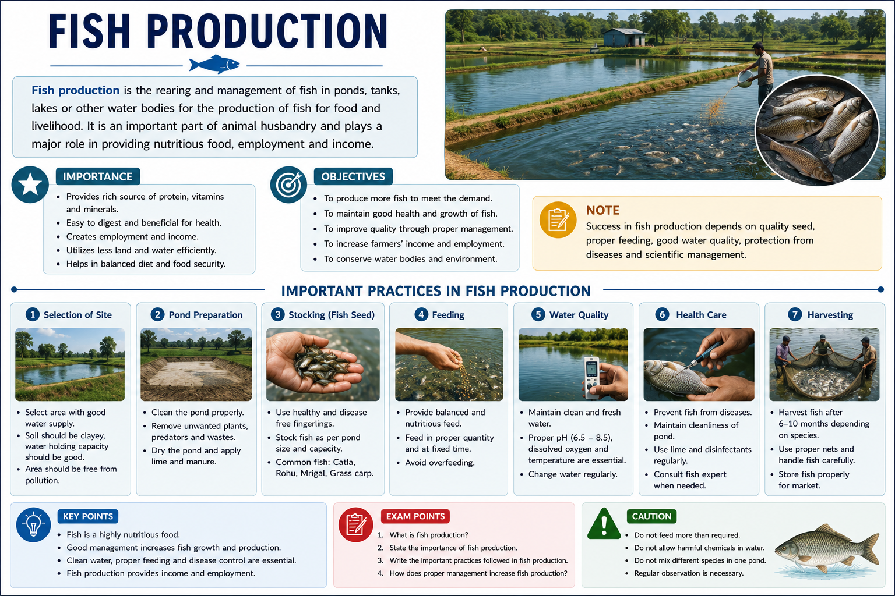

Fish Production
Fish production is an important part of animal husbandry that deals with the breeding, rearing and harvesting of fish. It provides a rich source of protein and supports the livelihood of millions of people.
🐟 What is Fish Production?
Fish production, also known as fisheries, is the practice of obtaining fish from natural water bodies or by growing fish under controlled conditions.
Scientific fish farming helps increase fish production, improve food supply and provide employment opportunities.
🌊 Types of Fisheries
Fisheries are mainly divided into two categories based on the source of fish production.
🌊 Capture Fisheries
Fish are obtained from natural water resources such as seas, rivers, lakes and ponds without artificial breeding.
🏞 Culture Fisheries
Fish are reared and bred in controlled environments like ponds, tanks and reservoirs for commercial production.
🐠 Pisciculture
Pisciculture is the practice of breeding and rearing fish for commercial purposes.
🌍 Sources of Fish Production
🌊 Marine Fisheries
Fish obtained from oceans and seas are called marine fisheries. Examples include tuna, sardines and prawns.
💧 Inland Fisheries
Fish obtained from freshwater sources such as rivers, lakes, ponds and reservoirs are called inland fisheries.
🏊 Fish Farming
Fish are grown scientifically in artificial ponds and tanks to increase production.
🐟 Composite Fish Culture
Composite fish culture is a method in which different species of fish with different feeding habits are grown together in the same pond. This allows maximum utilisation of available food resources.
🐠 Surface Feeders
Catla feeds near the surface of water and mainly consumes phytoplankton.
🐟 Middle Zone Feeders
Rohu feeds in the middle region of the pond and consumes plant matter and small organisms.
🐡 Bottom Feeders
Mrigal feeds at the bottom of the pond and consumes organic matter present in the soil.
⭐ Advantages of Composite Fish Culture
- Maximum use of food available at different levels of the pond.
- Increases total fish production.
- Different fish species can grow together without strong competition.
- Provides better economic returns to farmers.
- Helps meet the increasing demand for fish as food.
🌱 Management of Fish Farms
Proper management of fish farms is necessary for healthy fish growth and high production.
🏞 Pond Preparation
Ponds are cleaned, prepared and supplied with proper nutrients before introducing fish.
🍃 Food Supply
Fish are provided natural food and supplementary feed to support growth.
🩺 Disease Control
Regular monitoring helps identify and control diseases among fish populations.
⚠ Challenges in Fish Production
- Water pollution affects fish health.
- Diseases can spread quickly in fish farms.
- High-quality fish seeds may not always be available.
- Proper management and investment are required.
- Changing environmental conditions may affect production.
💡 Remember
Composite fish culture increases fish production by growing different fish species together according to their feeding zones.
📝 JKBOSE Exam Tip
Remember the difference between capture fisheries and culture fisheries, and learn the concept of composite fish culture with examples of different fish species.
📖 Summary
- Fish production involves breeding, rearing and harvesting fish for food and commercial purposes.
- Fisheries are divided into capture fisheries and culture fisheries.
- Marine fisheries obtain fish from seas and oceans, while inland fisheries use freshwater resources.
- Composite fish culture increases production by growing different fish species together.
- Proper pond management, feeding and disease control are essential for successful fish farming.
- Fish production provides nutritious food, employment and income opportunities.
🖼 Diagram

Image: Composite fish culture showing different fish species feeding at different water levels.